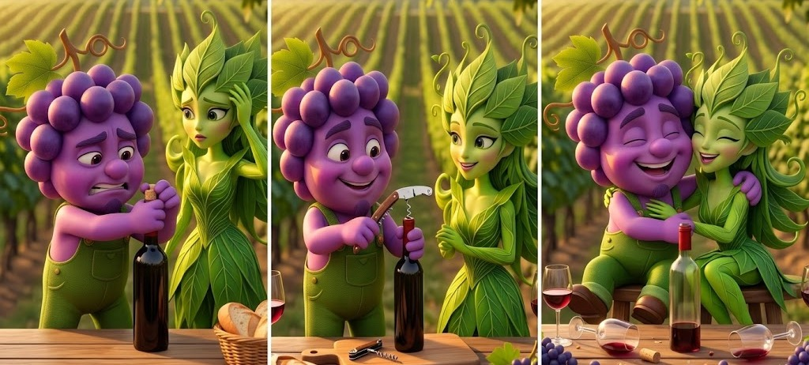

Claude + Gemini API · Dynamic Creative Optimization · PIPELINE & QA
DCO: una Pipeline, Più Prodotti
Il Dynamic Creative Optimization (DCO) smette di essere un esercizio a brand singolo nel momento in cui un'agenzia o un brand ha bisogno di farlo girare su più di una coppia di mascotte, più di una linea di prodotto, o più di un mercato alla volta. Il motore: generazione, controllo, export copre il meccanismo in sé — un brand, una coppia di mascotte, il loop genera → giudica → correggi che mantiene ogni inquadratura coerente con il brand (costruito su Claude e sull'API Gemini). Questo post dà per acquisito quel meccanismo e si chiede cosa cambi una volta spinto oltre un singolo brand: quanto costa davvero aggiungere una seconda coppia di mascotte, perché una pipeline condivisa ha bisogno di un file di configurazione per brand per restare affidabile (mostrato su due brand reali), e se quel file, insieme all'astrazione già presente nel loop, basti a portarlo su più prodotti — o se il tipo di campagna e il tipo di brand cambino ciò che va controllato. Il lato di mercato della questione ha i suoi post: DCO e il mercato delle agenzie e Il canale delle agenzie in Italia.
-
01
Perché conta per un catalogo multi-prodotto
Un'azienda alimentare raramente vende un solo prodotto. Una linea di torte sta accanto a marmellate, miele, conserve — una marmellata di frutti di bosco non è un salto creativo enorme rispetto a una torta, ma in un processo di produzione convenzionale resta comunque un servizio fotografico a parte o una commissione illustrativa a parte, con un proprio costo e propri tempi. Con una pipeline per la coerenza dei personaggi già costruita, una coppia affine alla marmellata è una seconda coppia di riferimento e una pipeline riusata: i passaggi di generazione, staging e giudizio non vanno ricostruiti, solo ripuntati.
Questa affermazione regge pienamente solo finché la nuova coppia resta dentro lo stesso mondo della prima — stessa atmosfera, stessa famiglia di palette, stesso tipo di ambientazione. Anche allora, "ripuntare la pipeline" non dice nulla su cosa debba restare standard nella storia di un brand una volta che i suoi stessi brief iniziano a tirare in direzioni diverse. Il pezzo mancante è un file di configurazione: uno per brand, che affianca le immagini di riferimento invece di essere sepolto nel brief di una singola inquadratura, e che fissa le asserzioni di identità su cui il judge (il passo D del loop) controlla ogni inquadratura, il prodotto di cui parla la storia, un'ancora di palette e stile di resa, il vocabolario di ambientazione consentito per quel brand, e il registro narrativo entro cui può oscillare.
Il capitolo successivo scrive quel file per due brand di questo sito — una fattoria e una cantina — e li usa per mostrare cosa si riusa quando arriva un secondo brand e cosa no. Il terzo si chiede fin dove arriva tutto questo: se il file di configurazione e l'astrazione già presente nel loop bastino per altri prodotti, o se il tipo di campagna e il tipo di brand cambino ciò che va controllato. Il lato di mercato — quali acquirenti pagano per il QA a ciclo chiuso, e le ragioni di un servizio flessibile — vive ora in DCO e il mercato delle agenzie e Il canale delle agenzie in Italia.
Il multi-prodotto è anche il punto in cui lo strato di export si guadagna il posto. Ogni riga che il motore consegna porta con sé la propria chiave di brand e di linea di prodotto, così un run su quattro linee non torna sotto forma di quattro cartelle da smistare a mano: torna come un unico manifest che l'agenzia può filtrare per linea, per slogan o per proporzione, e consegnare alla piattaforma una fetta alla volta. Lo schema delle colonne è in Il motore: generazione, controllo, export, capitolo 06.
-
02
Due brand, una pipeline: cosa si riusa e cosa no
Due brand di questo sito rendono concreto il problema del riuso. Pannocchino e Spighetta sono le mascotte della fattoria per una linea di torte (il matrimonio qui sotto viene da Storyboard Automatico: Ecco Pannocchino e Spighetta); Grappolotto e Foglina, un grappolo e una foglia di vite, sono le mascotte di un cavatappi professionale in legno, venduto da un brand lasciato volutamente anonimo — le immagini reali della campagna sono state de-brandizzate digitalmente per motivi di copyright, e il file di configurazione qui sotto mantiene la stessa scelta invece di inventare un nome di brand fittizio. Sono vicini nel registro — caldo, artigianale, enogastronomico — ma personaggi, ambientazioni e prodotto sono tutti diversi, il che li rende un test onesto: la pipeline è la stessa, il brand no. Qui sotto, ogni brand con il file di configurazione che starebbe accanto alle sue immagini di riferimento.
Brand A — la fattoria: Pannocchino e SpighettaLa coppia di riferimento di una linea di torte, mentre si preparano per il matrimonio in fattoria — luce da ora d'oro, ambientazione rurale e calda, registro da fiaba illustrata — accanto al prodotto per cui la storia esiste: la Torta Spighetta edizione nozze. Tutto ciò che D deve controllare in un'inquadratura come questa — chi sono i due personaggi, cosa indossano, quale prodotto è in scena, quali ambientazioni e colori appartengono a questo brand — è scritto nel file qui sotto. // brand_config.json — Brand A: Pannocchino e Spighetta, the farm (torta-spighetta) { "brand": "torta-spighetta", "identity_assertions": { "LEFT": "Pannocchino: corn-cob body, green leaf tuft, green overalls, brown boots", "RIGHT": "Spighetta: braided wheat updo with ears, red gingham dress, straw limbs" }, "product": { "name": "Torta Spighetta", "editions": ["Nozze", "Nascita"], "pack": "kraft-brown box, gold-foil wheat-and-poppy wreath" }, "palette": ["warm sunset gold", "wheat yellow", "poppy red", "kraft brown"], "style": "storybook 3D, soft golden-hour light", "settings_allowed": ["wheat field", "farmhouse yard", "barn courtyard", "kitchen"], "register": ["warm", "rural", "affectionate"], "slogans": { "Nozze": [ { "en": "Two cereal species, one field of affection", "it": "Due specie di cereali, un solo campo d'affetti" }, { "en": "Different in origin, united to sweeten us", "it": "Diversi per origine, uniti per addolcirci" } ], "Nascita": [ { "en": "Come wind, come rain, we'll feast on the grain", "it": "Con sta pioggia e con sto vento, ce magnamo sto frumento" }, { "en": "Soaked by rain or kissed by sun, a good harvest goes to anyone who wants one", "it": "Bagnato di pioggia o baciato dal sole, un buon raccolto se lo prende chi vuole" } ] } }
Brand B — la cantina: Grappolotto e FoglinaUna mini-storia in tre tempi sull'apertura di una bottiglia: a sinistra Grappolotto ci prova a mani nude mentre Foglina lo guarda perplessa; al centro usano il cavatappi; a destra si godono la serata, sbronzi e felici, con la bottiglia vuota e i bicchieri sul tavolo. Nuovo cast, nuova ambientazione, nuovo prodotto — stesso loop genera → giudica → correggi, guidato da un file diverso. // brand_config.json — Brand B: Grappolotto e Foglina, the winery (brand kept anonymous, see chapter text) { "brand": "anonymous", "identity_assertions": { "LEFT": "Grappolotto: purple grape-cluster head, small goatee, olive-green overalls with copper buttons, brown boots", "RIGHT": "Foglina: green vine-leaf crown, long curling-tendril hair, leaf dress" }, "product": { "name": "professional wooden corkscrew", "model": "branded model only; never a generic or antique stand-in" }, "palette": ["golden-hour olive", "grape purple", "terracotta", "stone brown"], "style": "storybook 3D, soft golden-hour light", "settings_allowed": ["terraced vineyard", "stone wall", "cellar", "grape-pressing yard", "harvest-festival courtyard"], "register": ["warm", "artisanal", "convivial"], "slogans": [ { "en": "With Foglina among the rows and Grappolotto down by the vine, the harvest gives us a wonderful wine!", "it": "Con Foglina tra i filari e Grappolotto giù nel tino, la vendemmia ci regala un grande vino!" }, { "en": "Between a cow who's had many booze, and a cheeky little vine, Grappolotto and his girl are raising a glass of wine!", "it": "Tra una mucca che sbevazza e un germoglio birichino, Grappolotto e la sua bella fanno festa col buon vino!" } ] }Letti uno accanto all'altro, i due file hanno le stesse chiavi e valori diversi — questo schema condiviso è l'unica cosa che il loop deve saper leggere, ed è ciò che permette alla stessa pipeline di far girare entrambi i brand senza modifiche. L'anatomia del file campo per campo, cosa esattamente si riusa da un brand all'altro, e il costo reale di aggiungere un secondo brand sono approfonditi a livello del file di configurazione in Motore DCO: descrizione tecnica.
-
03
Quanti controlli da fare? Configurazione, prodotti e tipo di campagna
Il capitolo precedente ha mostrato di cosa ha bisogno un secondo brand: un file di configurazione, una coppia di riferimento e un nuovo calibration set. Resta però una domanda a monte: basta questo per controllare la qualità di un prodotto diverso, o è sufficiente il livello di astrazione presente nel design della pipeline? La risposta ha due direzioni. Il loop genera → giudica → correggi non sa cosa sia un prodotto: legge uno schema e controlla ogni inquadratura rispetto alle asserzioni scritte, e per questo motivo può adattarsi a una linea di torte come a un cavatappi. Dentro una famiglia di prodotti e di brand appartenenti alla stessa categoria merceologica, con lo stesso registro, e una campagna dello stesso tipo (es.: mascotte) — il file di configurazione è sufficiente.
Dove può mancare qualcosa non è sul controllo del loop succitato, ma sulla messa in scena. Una scatola di torta, una bottiglia e un cavatappi sono posizionati in una scena in modi diversi, e hanno funzioni diverse. Occorre una piccola libreria di template di staging per categoria di prodotto, per avere in questo caso un'elasticità di varianti, un problema aperto elencato in Motore DCO: descrizione tecnica.
Il secondo limite è più ingombrante, e riguarda i controlli più che la generazione. Quanto una campagna vada controllata da vicino non è uguale per ogni prodotto. Una campagna healthcare, o per prodotti per l'infanzia, comporta molti più controlli di una campagna per un paio di calze: più asserzioni che il judge deve verificare (cosa si può mostrare, dichiarare o lasciar intendere), meno tolleranza per un'inquadratura che sembra 'abbastanza' giusta, e più interventi supervisionati — checkpoint umani che non sono facoltativi e non si possono ridurre a campionamento. Il loop è lo stesso, ma la configurazione è più ricca e la quota umana più ampia.
Qui emerge un legame che il solo file di configurazione non cattura: quella tra tipo di campagna e tipo di brand. Una coppia di mascotte da libro illustrato sta bene in una campagna per un brand alimentare — tono, ambientazione e prodotto si accordano — ma molto meno quando il soggetto richiede un registro particolare o una supervisione forte. Il file descrive il brand; non dice quali tipi di campagna quel brand possa sostenere con credibilità, né quale profilo di controllo richieda.
Si basa su: Il motore: generazione, controllo, export — un brand, una coppia di mascotte, e il loop genera → giudica → correggi che mantiene ogni inquadratura coerente con il brand, che questo post porta oltre il singolo brand.
Il lato di mercato: DCO e il mercato delle agenzie, Il canale delle agenzie in Italia.